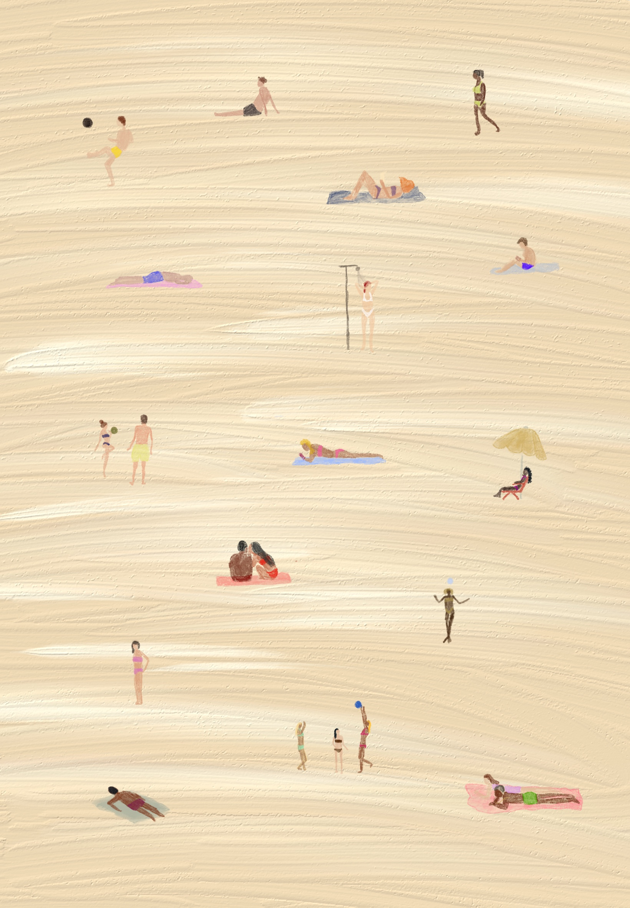

cartaz autoral
Areia
As praias cariocas, especialmente em locais como Ipanema e Copacabana, são espaços de intensa troca e convivência, onde diversas atividades acontecem simultaneamente, criando uma dinâmica única entre os frequentadores. A areia, nesse sentido, é mais do que apenas um local de lazer, é um palco onde as relações sociais se manifestam de forma espontânea e vibrante.
No meio do caos do dia a dia, a areia é o espaço onde diversas atividades acontecem. Os jogos de altinha são um grande marco da praia, em que reúnem grupos de amigos e desconhecidos em partidas informais, onde a habilidade e a diversão se encontram. O ritmo descontraído do jogo contrasta com a leveza do ambiente, sendo um reflexo da natureza sociável e acolhedora dos cariocas. Ao lado disso, muitos aproveitam o calor para pegar sol, seja deitados em toalhas coloridas ou sentados em cadeiras de praia, formando um mosaico de corpos relaxados. O simples ato de se expor ao sol torna-se um momento de descanso e reconexão com o ambiente, um ritual coletivo que marca o cotidiano praiano da cidade.
Essas trocas, que acontecem de forma orgânica e sem grandes formalidades, são uma das essências da praia carioca. Seja na interação através de um jogo, no compartilhamento do mesmo espaço para tomar sol, ou nas pequenas observações enquanto se lê um livro, a areia funciona como um ponto de encontro, onde diferentes pessoas e suas histórias se cruzam, criando uma rede de experiências que definem o caráter das praias do Rio de Janeiro.